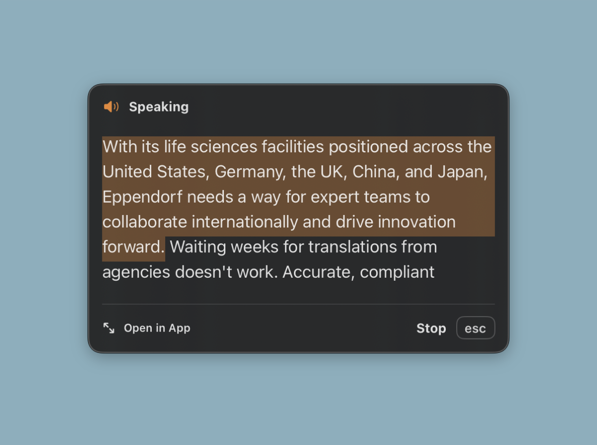
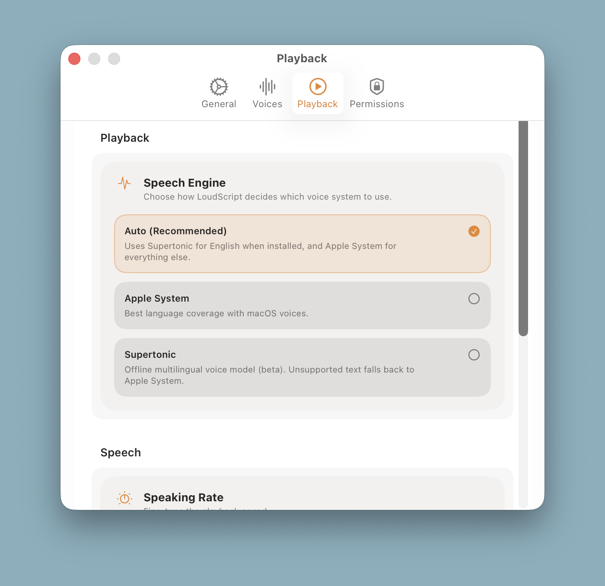
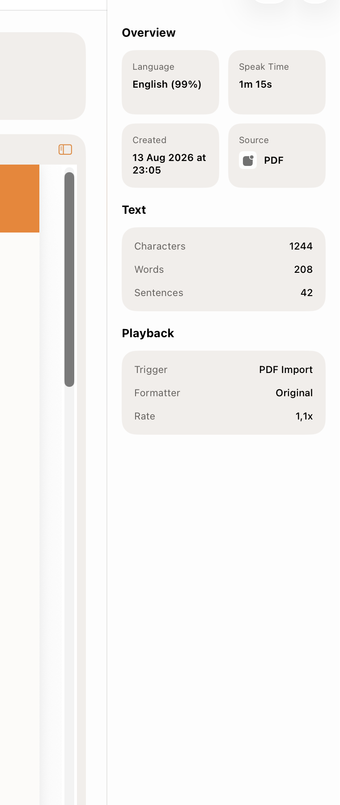

Grab text from any Mac app.
Right-click selected text and choose "Read with LoudScript" from the Services menu, or trigger it with a global keyboard shortcut.
Select text in any app, capture text from screenshots, and hear it read aloud with natural voices while you keep working.
Notarized DMG download. Requires macOS 15.6 or later.

Right-click selected text and choose "Read with LoudScript" from the Services menu, or trigger it with a global keyboard shortcut.
When text is locked in images or app interfaces, capture the screen and let built-in OCR extract and read it.
Choose Apple system voices for broad language support or install Supertonic for offline multilingual speech when you want it.
A floating overlay tracks your listening progress and gives you instant controls without switching windows.
The floating overlay sits above your windows, highlights the current phrase as it's spoken, and keeps playback controls one click away.
Switch between Apple system voices and Supertonic neural voices, adjust reading speed, and turn on smart formatting that cleans up text before it's spoken.

Every read is saved with the source app, detected language, character count, and original text. Search and replay past entries whenever you need them.

Select text in any app, capture a screenshot, or type directly into LoudScript.
LoudScript picks the right voice, formats the text, and starts reading with a floating overlay.
Your history keeps every entry with metadata so you can replay, copy, or reference it.
Free, notarized direct download. No App Store account needed.